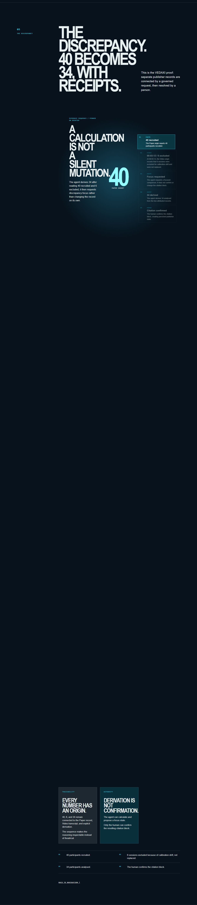
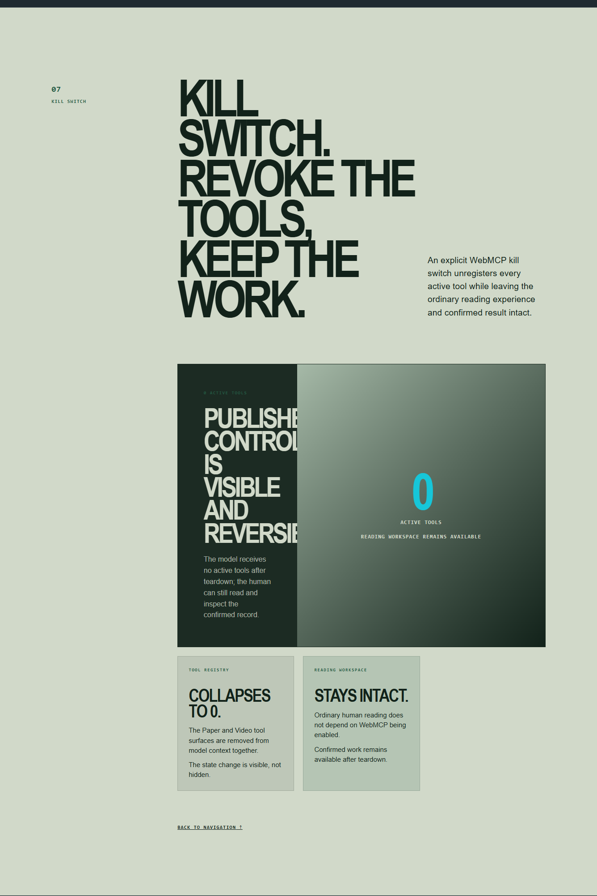

THE FAST-ANSWER PROBLEM
But a result can look complete long before its trail is understood.
FAST ANSWER.
UNKNOWN TRAIL.
01 / Paper origin
The supplied recording is the actual controlled fixture used by VEDAXI’s Video publisher.
PUBLISHER A / PAPER EVIDENCE
02 / Video origin
At 00:03:12, the recording discloses what the cohort number alone leaves out.
PUBLISHER B / VIDEO EVIDENCE
Evidence ≠ derivation. The relationship remains outside both publisher origins.
Publisher A
40 participants recruited.
Publisher B
00:03:12 · 6 sessions excluded for calibration drift.
40 − 6 = 34

Agent action
VEDAXI exposes bounded evidence tools and a structured focus request. The person keeps the confirmation gate.
REAL VIDEO FIXTURE / 00:03:12

Agent access is governed at the origin boundary.
It can request a focused evidence view, not unilaterally confirm it.
The final editorial decision remains visible and attributable.
KILL SWITCH: AGENT CAPABILITY OFF / HUMAN WORKSPACE INTACT
Built with WebMCP
Publisher-governed evidence.
Agent capability.
Human authority.